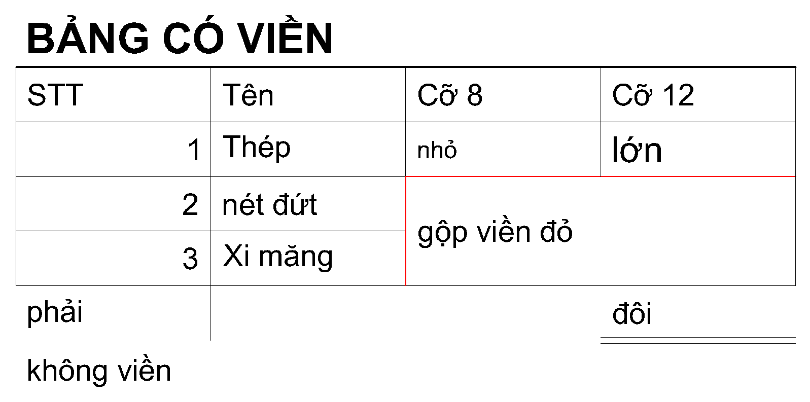
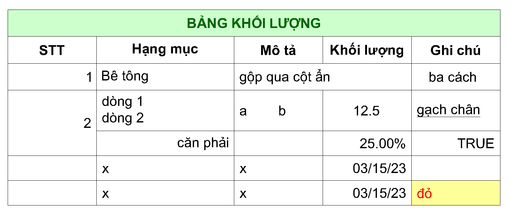

Copy một vùng ô trong LibreOffice Calc rồi dán vào bản vẽ thành bảng AutoCAD thật — giữ ô gộp, viền, màu nền,
cỡ chữ, độ rộng cột. Liên kết bảng với file .ods:
sửa trong Calc, Save, gõ CALCUPDATE là bảng trong bản vẽ cập nhật theo.
Không cần Excel.

Dùng SCALE thu nhỏ bảng cho vừa khung tên, kéo hẹp một cột, hay đổi chiều cao chữ? Khi gõ CALCUPDATE
lệnh hỏi Giu / Calc. Giu (mặc định) cập nhật nội dung, ô gộp, màu, viền theo Calc nhưng
giữ nguyên tỉ lệ, cột đã kéo và chiều cao chữ của bạn; dòng, cột mới thêm cũng được thu nhỏ đúng tỉ lệ.
Calc đưa bảng về đúng như lúc mới link. Lựa chọn được nhớ theo từng bảng.
Nhấp đúp vào bảng liên kết (hoặc gõ CALCEDIT) để mở file trong Calc, chọn sẵn đúng vùng đang link. Sửa xong Save: AutoCAD nhắc gõ CALCUPDATE, hoặc tự cập nhật nếu bạn bật trong CALCLINKOPT. Bảng vẫn là bảng AutoCAD thật — snap được, in nét, máy chỉ xem bản vẽ không cần LibreOffice.
0.4.1 · sửa lỗi: khi dán bằng CALCPASTE mà chọn Khong ở câu "Lấy định dạng và độ rộng cột từ Calc?",
chữ trong ô không còn dính mép trên (Table Style mặc định của AutoCAD căn trên); nay chữ căn giữa theo chiều dọc.
Bảng có link: chạy lại CALCUPDATE để áp dụng.
Lưu ý: đây là bản thử nghiệm. Nhấp đúp và nhắc/tự cập nhật khi Save mới được kiểm bằng test tự động, chưa thử trên giao diện AutoCAD. Nếu gặp sai khác, hãy báo lỗi.
Ảnh thật, không dựng lại: bên trái do LibreOffice Calc vẽ, bên phải xuất từ AutoCAD 2024 (lệnh PLOT) sau khi CalcLink tạo bảng.

Vùng không có viền nào trong Calc thì bảng giữ lưới của Table Style, như bảng khối lượng ở trên.
Dán một lần, về sau chỉ cần Save trong Calc rồi cập nhật.
Bôi đen vùng ô, Ctrl+C. Trong AutoCAD gõ CALCPASTE. File đã lưu dạng .ods thì lệnh hỏi có liên kết không. Hoặc gõ CALCLINK để chọn file, sheet, vùng — không cần mở Calc.
Đổi chữ, thêm bớt dòng, gộp hay bỏ gộp ô. Nhấp đúp vào bảng hoặc CALCEDIT để mở đúng file và vùng. Đặt tên vùng trong Calc để link không lệch khi chèn dòng.
CALCUPDATE rồi Enter là cập nhật mọi bảng liên kết trong bản vẽ. Bảng giữ vị trí, layer, Table Style. Chọn Giu để giữ kích thước bạn đã chỉnh trong CAD.
Từ dán nhanh một vùng ô đến một bảng liên kết luôn khớp với file nguồn.
CalcLink đọc trực tiếp file .ods nên không cần Excel và không cần mở LibreOffice khi cập nhật. Nó đọc nội dung đã lưu của file, vì vậy hãy Save trong Calc trước khi cập nhật.
CALCUNLINK.Phần chưa kiểm trên giao diện: nhấp đúp mở nguồn, nhắc/tự cập nhật khi Save, tiếng Việt ở dòng lệnh, tự nạp khi mở AutoCAD. Hãy thử trên bản vẽ phụ trước khi dùng cho bản vẽ chính, và báo lỗi nếu có.
Báo lỗi trên GitHub →Phiên bản mới nhất. Gói nhỏ, cài bằng một script, AutoCAD tự nạp mỗi lần mở.
Đối chiếu file tải về bằng SHA256SUMS.txt trong cùng bản phát hành. Gói chưa ký số: AutoCAD có thể hỏi bảo mật khi nạp lần đầu.
CalcLink.bundle.zip.CalcLink.bundle, chạy: powershell -ExecutionPolicy Bypass -File install.ps1%APPDATA%\Autodesk\ApplicationPlugins\CalcLink.bundle\Contents vào Options → Files → Trusted Locations.Script chỉ chép file, không đổi cài đặt bảo mật của AutoCAD. Cài cho mọi người dùng: thêm -AllUsers (cần quyền admin). Gỡ: thêm -Uninstall.
CalcLink sinh ra từ một việc rất đời thường của người làm bản vẽ: bảng thống kê làm trong Calc, rồi phải dựng lại trong AutoCAD mỗi lần số liệu đổi. Mục tiêu: bảng trong bản vẽ luôn khớp file nguồn, giữ nguyên ô gộp và định dạng, không phải dán ảnh hay làm lại bằng tay. Phát hành trên GitHub bởi darkend16987.
Gặp lỗi hay muốn thêm tính năng? Mở một mục trên GitHub, kèm nguyên văn thông báo ở dòng lệnh và file .ods (hoặc vùng ô) gây lỗi.
Mở issue trên GitHub